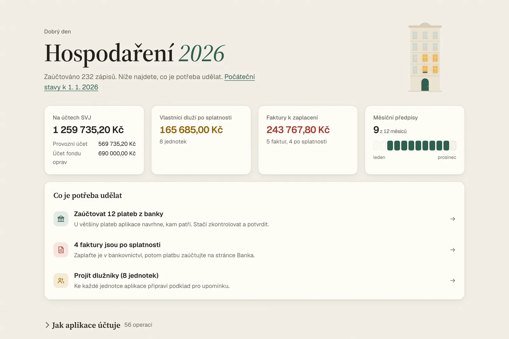
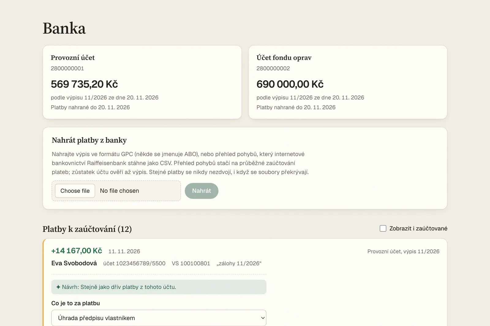
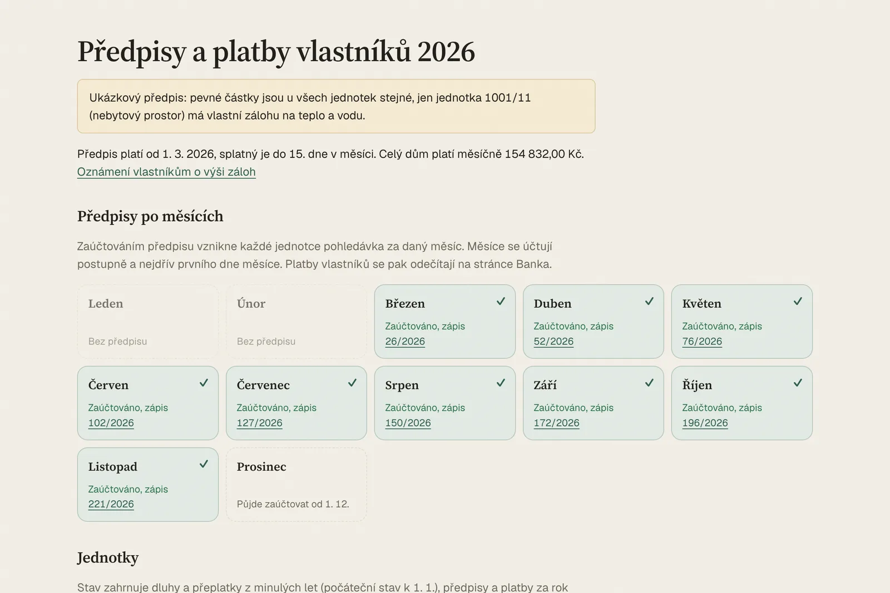
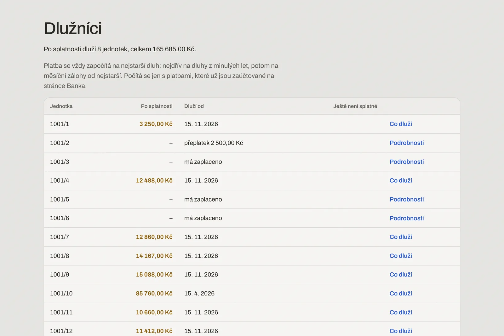
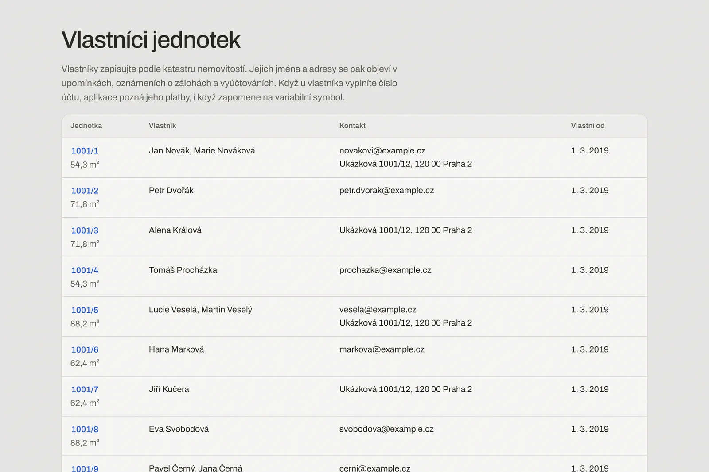
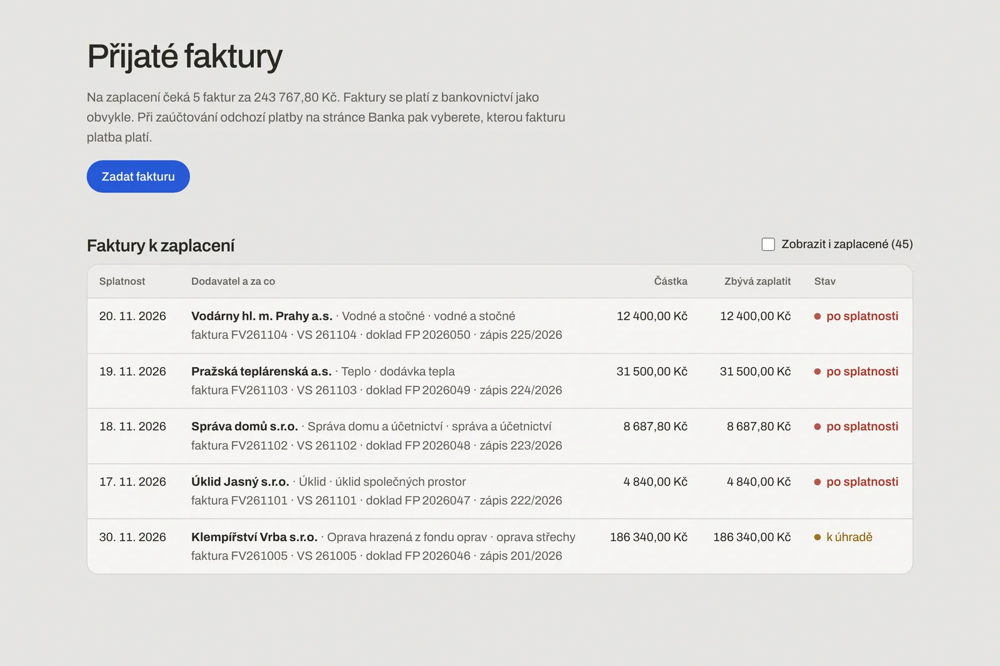
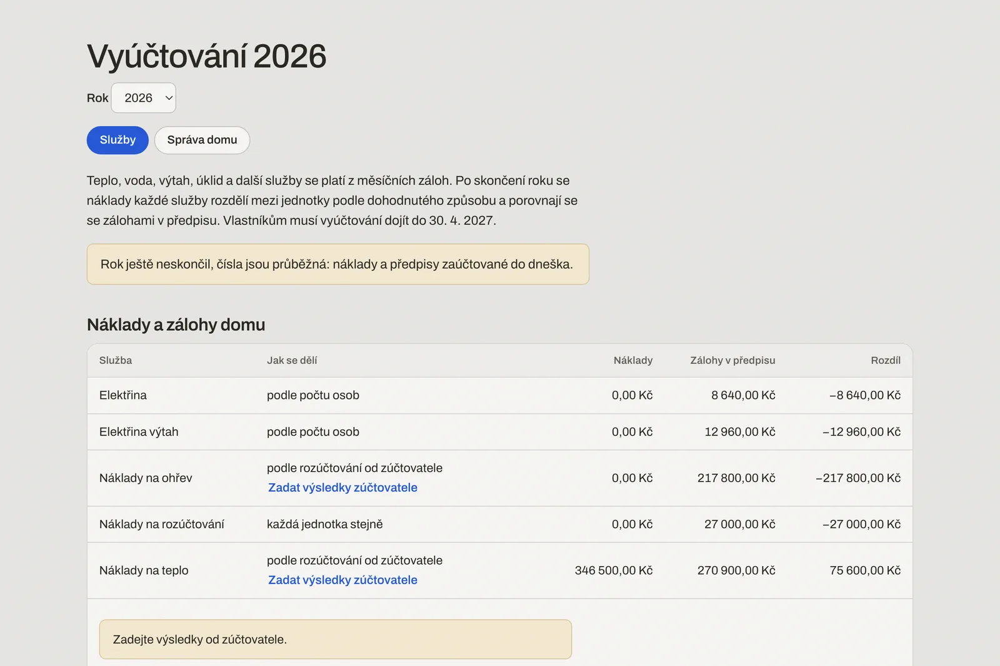
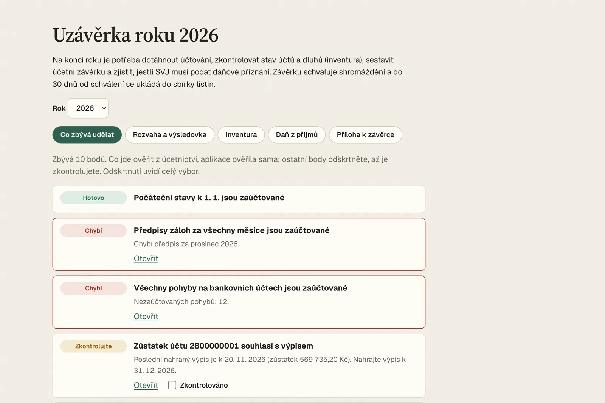

Co aplikace umí
-
Úvodní stránka řekne, kolik je na účtech, kdo dluží a co je právě potřeba udělat.
-
Nahrajete výpis a aplikace u každé platby navrhne, kam patří. Potvrzuje ji vždycky člověk.
-
Měsíční zálohy všech jednotek zaúčtujete jedním tlačítkem. Novou výši záloh zadáte s datem, od kdy platí.
-
U každé jednotky je vidět, kolik je po splatnosti a od kdy, i se zákonným úrokem z prodlení. Upomínku vytisknete nebo pošlete e-mailem.
-
Kdo kterou jednotku vlastní a od kdy. Při prodeji zůstanou prodávajícímu dluhy, které na kupujícího nepřešly.
-
Přijatou fakturu zadáte a aplikace ji zaúčtuje podle toho, za co je. V seznamu vidíte, co zbývá zaplatit.
-
Roční náklady na služby a správu domu se rozdělí mezi jednotky přesně na haléře a porovnají se zálohami.
-
Kontrolní seznam, rozvaha, výsledovka, inventurní soupisy a návrh přílohy k účetní závěrce.
Tohle aplikace zatím neumí. Co chybí, je sepsané ve specifikaci.








Zbývá prosinec
Zálohy se předepisují měsíc po měsíci a každý měsíc jen jednou. Zaúčtujte ten poslední a rok je předepsaný celý.
Cesta jedné platby
Nejdřív nahrajete výpis z banky.
Pak aplikace navrhne, kam platba patří.
Potom návrh potvrdí člověk.
| MD 221100 | 14 167,00 |
| D 311100 · 1001/8 | 14 167,00 |
Nakonec je zápis v deníku a nejde přepsat.
Každé pravidlo má zdroj
Jak se která operace účtuje, popisuje katalog 56 operací. U každé je paragraf nebo literatura, ze které vychází, a příklad, který při každé změně kódu ověřují testy.
Zkuste ji
u sebe.
OpenSVJ je open source pod licencí AGPL 3.0: provozujete ho na vlastním serveru a nic za něj neplatíte. Je ve vývoji a zkouší se na účetnictví jednoho skutečného domu. Součástí je vymyšlené SVJ Ukázková 12 s rokem dat, na kterém si všechno projdete.
git clone https://github.com/jonasjancarik/opensvj.git
cd opensvj
cp .env.example .env
docker compose up -d
pnpm installPotřebujete Docker, uv a pnpm. Zbytek postupu včetně ukázkových dat je v README.
Celý postup v README